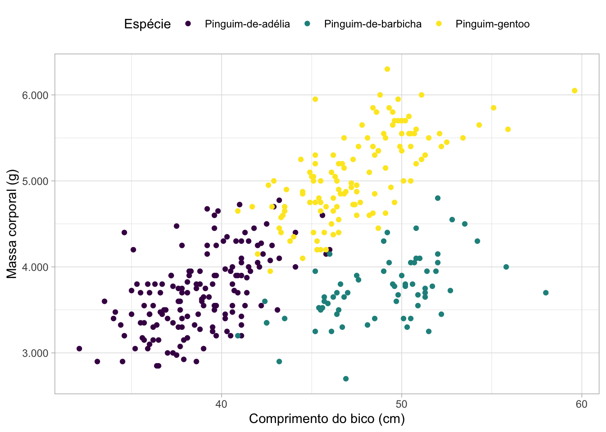

Dúvidas
Dúvidas enviadas por alunas e alunos do curso e não deu tempo de responder durante a aula!
NA em tabelas
“Como substituir NA com “-” em tabelas? Existe uma forma geral de fazer isso ou o jeito é trabalhar cada tabela mesmo?”
Preparando uma tabela de exemplo
Usando knitr
# essa opcão do knitr deixa você escolher o que aparece onde tem NA
options(knitr.kable.NA = '-')
tabela_com_NA |>
knitr::kable()| nome | altura | massa | cor_do_cabelo |
|---|---|---|---|
| C-3PO | 167 | 75 | - |
| R2-D2 | 96 | 32 | - |
| R5-D4 | 97 | 32 | - |
| Greedo | 173 | 74 | - |
| Jabba Desilijic Tiure | 175 | 1358 | - |
| Arvel Crynyd | - | - | Castanho |
| Finn | - | - | Preto |
| Rey | - | - | Castanho |
| Poe Dameron | - | - | Castanho |
| BB8 | - | - | Nenhum |
| Captain Phasma | - | - | Nenhum |
Usando outras funções para gerar tabelas
Pesquisar na documentação se existe algum argumento para isso, ou..
substituir nas colunas:
tabela_com_NA_tratado <- tabela_com_NA |>
mutate(across(.fns = ~ as.character(.x) |> tidyr::replace_na("-")))tabela_com_NA_tratado |> glimpse()Rows: 11
Columns: 4
$ nome <chr> "C-3PO", "R2-D2", "R5-D4", "Greedo", "Jabba Desilijic Ti…
$ altura <chr> "167", "96", "97", "173", "175", "-", "-", "-", "-", "-"…
$ massa <chr> "75", "32", "32", "74", "1358", "-", "-", "-", "-", "-",…
$ cor_do_cabelo <chr> "-", "-", "-", "-", "-", "Castanho", "Preto", "Castanho"…tabela_com_NA_tratado |>
DT::datatable()Formatação numérica brasileira
Como utilizar vírgula decimal e ponto de milhar? Esse não testei depois de aprender lang= pt, sabem me dizer se a alteração é automática colocando lang ou se precisa fazer outra coisa?
- Não,
lang=ptnão altera isso :(
Preparando uma tabela de exemplo
Em textos
A função format é útil!
format(
pinguins_selecionada$massa_corporal,
decimal.mark = ",",
big.mark = "."
)[1] "3.750" "3.800" "3.250" " NA" "3.450" "3.650"Em tabelas (knitr)
| especie | ilha | comprimento_bico | profundidade_bico | massa_corporal |
|---|---|---|---|---|
| Pinguim-de-adélia | Torgersen | 39,1 | 18,7 | 3.750 |
| Pinguim-de-adélia | Torgersen | 39,5 | 17,4 | 3.800 |
| Pinguim-de-adélia | Torgersen | 40,3 | 18,0 | 3.250 |
| Pinguim-de-adélia | Torgersen | - | - | - |
| Pinguim-de-adélia | Torgersen | 36,7 | 19,3 | 3.450 |
| Pinguim-de-adélia | Torgersen | 39,3 | 20,6 | 3.650 |
Em tabelas (outras)
Pesquisar na documentação se existe algum argumento para isso, ou..
substituir nas colunas:
pinguins_selecionado_formatado |> glimpse()Rows: 6
Columns: 5
$ especie <fct> Pinguim-de-adélia, Pinguim-de-adélia, Pinguim-de-adé…
$ ilha <fct> Torgersen, Torgersen, Torgersen, Torgersen, Torgerse…
$ comprimento_bico <chr> "39,1", "39,5", "40,3", " NA", "36,7", "39,3"
$ profundidade_bico <chr> "18,7", "17,4", "18,0", " NA", "19,3", "20,6"
$ massa_corporal <chr> "3.750", "3.800", "3.250", " NA", "3.450", "3.650"pinguins_selecionado_formatado |>
DT::datatable()Em gráficos
ggplot(pinguins) +
geom_point(aes(x = comprimento_bico, y = massa_corporal, color = especie)) +
theme_light() +
# AQUI EMBAIXO FORMATAMOS, NO SCALE_Y_CONTINUOUS
scale_y_continuous(labels = ~format(.x, decimal.mark = ",", big.mark = ".")) +
labs(
x = "Comprimento do bico (cm)",
y = "Massa corporal (g)",
color = "Espécie"
) +
theme(legend.position = "top") +
scale_color_viridis_d()